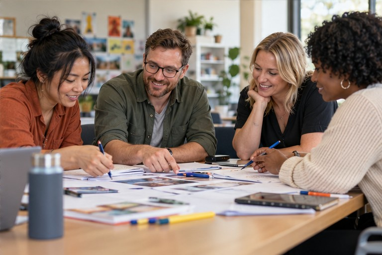

Sector expertise
Deep knowledge of education staffing across Victoria and New South Wales.
Take the next step in your teaching career with personal support from our team.
Explore OpportunitiesHave a question about your next step? Get in touch with our team.
Get in TouchA more personal approach
We are a specialised talent provider connecting exceptional educators and professionals with schools across Victoria and New South Wales.
Get to know KAQuality, culture and long-term impact.
That’s what a good connection should bring.
Deep knowledge of education staffing across Victoria and New South Wales.
A trusted pool of pre-screened educators and professionals.
Genuine, long-term matches shaped around people, not just vacancies.
Clear, responsive communication from the first conversation.
Who we help
Personal support for educators.
Recruitment shaped around each school.
From refining your CV to preparing for interviews, explore opportunities that fit your skills and goals.
For teachers
Tell us what your school needs. We’ll connect you with educators who bring expertise and a genuine passion for education.
For schoolsHow we work with schools
Share your staffing requirements, your school culture and what matters to your community.
We shortlist and screen candidates, with interviews, references and qualification checks.
Review suitable educators and take the next step with personal support from our team.
Your next chapter
A new opportunity. A new team member. It all starts with a conversation.
Talk to our team +61 435 900 849